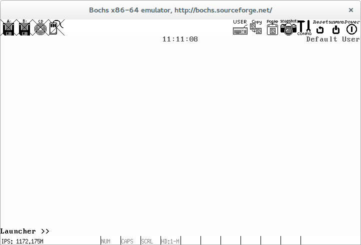

Contents
First Boot
When you first boot your PC you will be presented with a screen similar to the above. (screen shot from the emulator, a physical boot will look the same without the white info bars at the top and bottom.)
Three programs have been started by the init program.
- The time program (top centre) displays the current system time
- The name program (top right) displays the name of the current user
- MASH (bottom row) is the built in shell for launching programs in MOS
To get comfortable with mash, and a few of the built in programs, lets launch a new program; type "processes" into mash and hit return.
A new program should fill the screen. This program tracks running processes. It can tell you the cpu usage, pid, name, and state of each process.
You will also notice that the new process is white, and launcher became grey. This is because the new processes is input capable. The white process is the one that currently has keyboard input from the OS. The OS will automatically switch keyboard input to a new process if the process is input capable.
By pressing ctrl+tab, you can switch between all imputable processes. Do that a few times now, you will notice that the time and name processes never get input. That is because these processes are not input capable.
Next lets launch another program; make sure MASH has keyboard input (make it white using ctrl+tab) then type "banner\_left" and hit return.
You will see the processes program disappear and be replaced by a new program.
This happened because the new program wanted some of the screen that was already being used. The OS paused and hid the overlapping programs.
To switch between hidden programs you can press shift+tab.
Do this now until you can see processes again.
Now lets end some processes. By using the processes program, you can identify the PID of any running program. Then by simply typing "kill pid" into MASH, the selected program will be stopped and all resources cleared.
Alternatively, with input in 'processes' you can use the up and down arrows to select a program with '>' and press 'k' to kill it.
Now that you have a feel for the OS type "ls /bin/" into MASH
This will show all the files in the /bin/ directory. These are the currently installed programs, you will recognise some of these from the ones we have mentioned so far.
Finally try typing "man man". This should give you all the information you need to start exploring the OS.